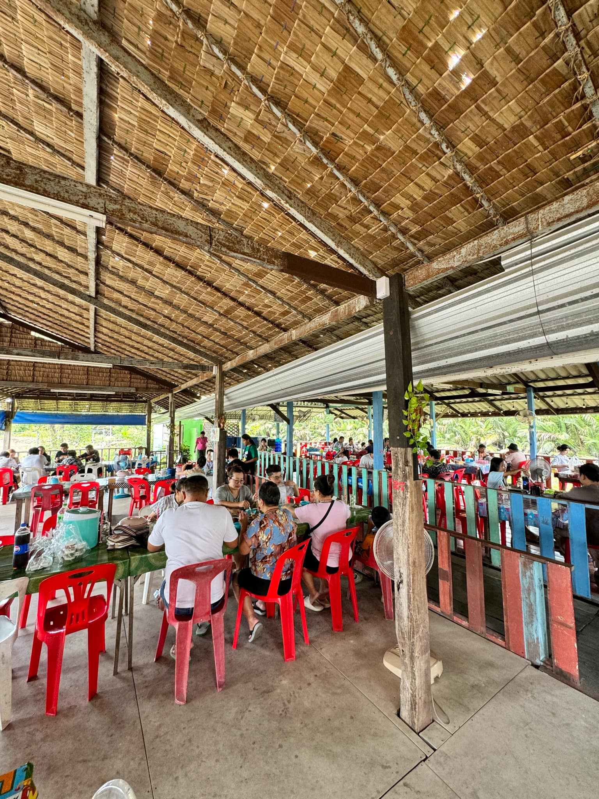

ครัวโพธิ์ทะเลซีฟู้ด
ร้านอาหารอยู่ริมทะเล อาหารทะเลสด มีเมนูหลากหลายและรสชาติของอาหารรสจัดจ้าน อาทิ ปลาทับทิมราดพริกสด, ข้าวผัดปู, หมึกไข่ผัดไข่เค็ม, ปูนิ่มผัดผงกะหรี่, ต้มยำรวมมิตร เป็นต้น นอกจากนี้บรรยากาศเงียบร่มรื่น และที่จอดรถสะดวก ที่อยู่ : 200/22 หมู่ 1 ซอยเทศบาลบางปู 74 ถนนสุขุมวิท ตำบลบางปูใหม่ อำเภอเมืองสมุทรปราการ จังหวัดสมุทรปราการ 10280 เวลาทำการ : จ.:10:30 - 22:00อ. - พฤ:10:30 - 21:30ศ.:10:30 - 22:00ส. - อา.:10:30 - 21:30
Back
